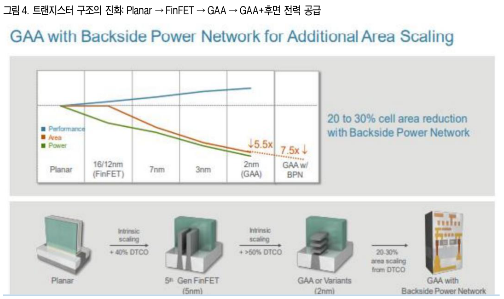
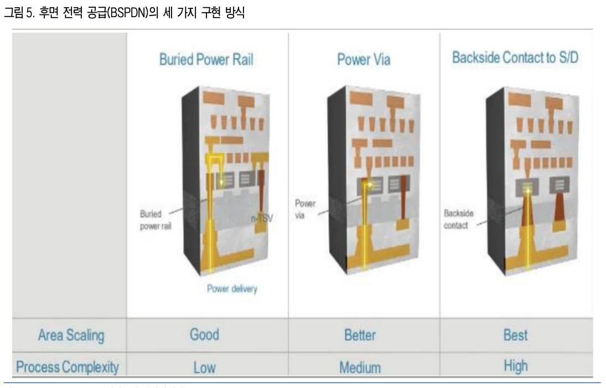

반도체 파운드리 — 선단 2nm·CoWoS 병목, 삼성의 대체 수요, 8인치의 역주행
한눈에 보기
결론 3줄
- AI 가속기·서버 CPU 수요가 TSMC 선단(N3·N2)과 CoWoS를 동시에 꽉 채움
- 병목이 물량에서 가격으로 번짐 → 웨이퍼보다 패키징·8인치에서 인상
- 넘치는 수요가 삼성 2nm·인텔 EMIB-T·OSAT·8인치 전문 파운드리로 흘러감
| 항목 | 값 | 출처 |
|---|---|---|
| 1Q26 점유율 | TSMC 72.3% · 삼성전자 6.5% | 유안타증권, 2026-07-10 |
| TSMC 2026 CapEx | 520~560억$ → 600~640억$ | 하나증권, 2026-07-20 |
| TSMC N2 매출 비중 | 3%(2Q26) → 8%(3Q26) | TSMC IR, 2026-07-16 / 유안타증권, 2026-11-11 |
| CoWoS | 2027년 말 월 18만~21만 장에도 빠듯 | 유안타증권, 2026-11-11 / SK증권, 2026-05-28 |
| CoWoS 패키징 가격 | 15~20% 인상 논의 | 〃 |
| 8인치 가동률 | 70~80%(2024~25년) → 90% 이상(2026년) | DS투자증권, 2026-09-18 |
| 8인치 가격 | 1H26 +5~15% | 〃 |
flowchart LR D["AI 가속기·서버 CPU<br/>모바일 AP"] --> N["선단 N3·N2<br/>(TSMC 풀캐파)"] N --> C["CoWoS<br/>(최대 병목)"] N -.->|"넘치는 수요"| S["삼성 2nm<br/>인텔 18A·14A"] C -.->|"외주·대안"| O["OSAT CoW·oS<br/>인텔 EMIB-T"] P["AI 전력(BCD·PMIC)"] --> E["8인치·성숙 공정<br/>(감산 + 수요 → 가격 인상)"] N --> R["결과: 웨이퍼 +5~10%<br/>패키징 +15~20% 논의"] C --> R
① 기술 기초
Summary
- 파운드리 = 설계도대로 지어주는 시공사. 경쟁력 = 미세공정 + 수율 + 캐파 + 첨단 패키징 + 설계 지원
- 트랜지스터는 FinFET → GAA → BSPDN(후면 전력)으로 진화 → 장비·소재 수요 신설
- IDM·파운드리·패키징의 경계가 흐려지는 중
파운드리 모델 — 누가 무엇을 만드나
flowchart LR F["팹리스·빅테크<br/>(설계: GPU·ASIC·AP·CPU)"] -->|"설계도(GDS)"| P["파운드리 전공정<br/>(EUV 노광·증착·식각 반복)"] P -->|"완성 웨이퍼"| A["첨단 패키징<br/>(CoWoS·SoIC·EMIB-T)"] M["메모리 3사<br/>(HBM)"] --> A A -->|"패키지"| T["테스트<br/>(OSAT·자체)"] T --> S["AI 서버·스마트폰·PC"] P -.->|"HBM4 베이스다이 생산"| M
- 같은 설계도도 어느 파운드리에서 찍느냐에 따라 성능·전력·원가가 다름 (삼일PwC 경영연구원, 2026-10-26)
- IDM 경계가 흐려짐
- 삼성: 메모리·파운드리·패키징 턴키 → HBM4 베이스다이를 자사 4nm로 생산 (신영증권, 2026-05-26)
- TSMC: CoWoS·SoIC·WMCM·CoPoS로 전·후공정을 묶는 ‘파운드리 2.0’ (IBK투자증권, 2026-11-02)
단위와 구분
| 용어 | 뜻 | 출처 |
|---|---|---|
| 웨이퍼 장/월(wpm, kwpm) | 캐파 단위. 8·12인치 환산 혼재 → 표마다 기준 확인 ⚠ | — |
| 선단 vs 성숙 | 통상 28nm 미만 = 선단, 28nm 이상 = 성숙(레거시) | 삼일PwC 경영연구원, 2026-10-26 |
| 8인치(200mm) vs 12인치(300mm) | 12인치 면적 약 2.25배 → 칩당 원가 20~40%↓ | DS투자증권, 2026-09-18 |
| └ TI 기준 | 칩당 원가 40%↓ | 〃 |
| 레티클 | 노광 1회 최대 면적(약 858mm²) | 유안타증권, 2026-11-11 |
| └ AI 가속기 | 패키지가 이미 레티클 5배 이상 | 〃 |
트랜지스터 구조: FinFET → GAA → 후면전력(BSPDN)
| 구조 | 원리 | 적용·영향 | 출처 |
|---|---|---|---|
| FinFET | 지느러미 채널 3면을 게이트가 감쌈 → 선폭 축소 시 누설 | — | 유안타증권, 2026-11-11 |
| GAA | 나노시트 여러 장, 게이트가 4면 감쌈 → 누설 감소 | TSMC N2·삼성 3nm·인텔 18A부터 | 유안타증권, 2026-11-11 / BNK투자증권, 2026-08-18 |
| GAA 공정 | Si/SiGe 교대 적층 후 SiGe만 깎는 ‘채널 릴리스’ | 선택적 식각·ALD·전구체 수요 증가 | BNK투자증권, 2026-08-18 |
| BSPDN | 전원선 뒷면·신호선 앞면 → 배선 혼잡·전압 강하 완화 | 인텔 18A 선행 → TSMC A16·삼성 SF2Z | 하나증권, 2026-11-12 |
| BSPDN 공정 | 붙이고 → 뒤집고 → 10㎛ 미만 연삭 → 재배선 | 웨이퍼 본딩·CMP·오버레이 계측 수요 신설 | 유안타증권, 2026-11-11 |
| High-NA EUV | 개구수 0.33 → 0.55 | 인텔 14A·삼성 SF1.4 선행 | 유안타증권, 2026-11-11 |
| └ TSMC | A14까지 기존 EUV, 2030년 도입 | 멀티 패터닝↑ → 증착·식각·세정 장비↑ | 〃 |
- 명칭: 삼성 GAA = MBCFET, 인텔 GAA = RibbonFET, 인텔 BSPDN = PowerVia, TSMC A16 BSPDN = SPR

출처: 유안타증권, 2026-11-11, p.35 (원자료 Applied Materials)

출처: 유안타증권, 2026-11-11, p.36 (원자료 Applied Materials)
| BSPDN 방식 | 원리 | 면적 이득 | 공정 난도 | 대표 적용 |
|---|---|---|---|---|
| Buried Power Rail | 전원선을 트랜지스터 사이에 매립 | 보통 | 낮음 | — |
| PowerVia | 뒷면 전원선 + 나노 관통전극(nTSV)으로 옆 연결 | 중간 | 중간 | 인텔 18A |
| Backside Contact | 뒷면에서 소스·드레인에 직접 연결 | 최대 | 높음 | TSMC A16(SPR) |
(유안타증권, 2026-11-11, p.36)
공정 노드 로드맵 (3사 + 후발)
| 업체 | 노드 | 트랜지스터·전력 | 양산 시점(리포트 기준) | 출처 |
|---|---|---|---|---|
| TSMC | N3 | FinFET + EUV | 양산 중 (2026년 매출 비중 30%) | TSMC IR, 2026-07-16 |
| TSMC | N2 | GAA 나노시트 첫 적용, 전면 배선 | 4Q25 양산 시작 | 유안타증권, 2026-11-11 |
| TSMC | A16 (1.6nm) | GAA + Super Power Rail(BSPDN) | 2H26 위험생산 → 2027년 본격 양산(4월 심포지엄에서 연기) | 유안타증권, 2026-11-11 |
| TSMC | A14 | GAA, 기존 EUV | 2027 위험생산 → 2028 양산 | 유안타증권, 2026-11-11 |
| TSMC | A12 / A13 | 차세대 SPR(데이터센터용) | A12 2029, A13은 2026-04 심포지엄 공개 | 유안타증권, 2026-11-11 / TSMC IR, 2026-07-16 |
| 삼성전자 | SF2 (2nm 1세대) | GAA(MBCFET) | Exynos 2600 양산 | IBK투자증권, 2026-11-02 |
| 삼성전자 | SF2P (2nm 2세대) | GAA | Exynos 2700 2026-10 초 웨이퍼 투입 | 유안타증권, 2026-11-11 |
| 삼성전자 | SF2Z | GAA + BSPDN | 2027 목표 | 하나증권, 2026-11-12 |
| 삼성전자 | SF1.4 | High-NA 일부 층 | 2029 (연기) | 유안타증권, 2026-11-11 |
| 인텔 | 18A / 18A-P | RibbonFET + PowerVia | 18A 양산 중, 18A-P 리스크 생산 | 유진투자증권, 2026-07-24 |
| 인텔 | 14A | PowerDirect + High-NA | 위험생산 2028 → 양산 2029 (외부 고객 없으면 중단 가능) | 유안타증권, 2026-11-11 |
| SMIC | 7nm (DUV 멀티패터닝) | FinFET | 생산 확대, 5nm 개발 | 삼일PwC 경영연구원, 2026-10-26 |
| Rapidus | 2nm | GAA | 2027년도 하반기 목표 | KB증권, 2026-09-07 |
선단 노드 양산 일정 (리포트 종합, 근사)
| 구분 | 항목 | 2025 | 2026 | 2027 | 2028 | 2029 | 2030 | ||||||||||||||||||
|---|---|---|---|---|---|---|---|---|---|---|---|---|---|---|---|---|---|---|---|---|---|---|---|---|---|
| 1Q | 2Q | 3Q | 4Q | 1Q | 2Q | 3Q | 지금 4Q | 1Q | 2Q | 3Q | 4Q | 1Q | 2Q | 3Q | 4Q | 1Q | 2Q | 3Q | 4Q | 1Q | 2Q | 3Q | 4Q | ||
| TSMC | N2 램프업 | 25.10~26.12 | |||||||||||||||||||||||
| A16 위험→본격 양산 | 26.07~27.12 | ||||||||||||||||||||||||
| A14 위험생산 | 27.01~27.12 | ||||||||||||||||||||||||
| A14 양산 | 28.01~28.12 | ||||||||||||||||||||||||
| High-NA 도입 | 30.01~30.12 | ||||||||||||||||||||||||
| 삼성전자 | SF2 (Exynos 2600) | 25.10~26.09 | |||||||||||||||||||||||
| SF2P (Exynos 2700) | 26.10~27.09 | ||||||||||||||||||||||||
| SF2Z (BSPDN) | 27.01~27.12 | ||||||||||||||||||||||||
| SF1.4 (High-NA) | 29.01~29.12 | ||||||||||||||||||||||||
| 인텔 | 18A 양산 | 25.10~26.12 | |||||||||||||||||||||||
| 14A 위험생산 | 28.01~28.12 | ||||||||||||||||||||||||
| 14A 양산 | 29.01~29.12 | ||||||||||||||||||||||||
| 기타 | Rapidus 2nm 양산 | 27.10~28.03 | |||||||||||||||||||||||
진행·확정 계획 구간 | 굵은 세로선 = 연도 경계 · 막대 안 = 원문 기간(연.월)
② 전방 수요
Summary
- 수요 축 = AI 가속기(GPU + ASIC) + 서버 CPU(에이전트 AI) + 모바일 AP(첫 노드 진입자)
- TSMC 매출의 3분의 2가 HPC → 이번 사이클은 데이터센터가 실적을 좌우
- 새 전방: HBM4 베이스다이(로직 공정화)와 AI 전력반도체(8인치 부활)
수요 축별 요약
| 수요 축 | 핵심 | 출처 |
|---|---|---|
| AI 가속기 | 학습 = NVIDIA GPU | 유안타증권, 2026-11-11 |
| 추론 확대 → 빅테크 ASIC·Host CPU 비중↑ | 유안타증권, 2026-11-11 | |
| ASIC → 설계·IP·네트워크·파운드리·패키징 동반 성장 | 유안타증권, 2026-11-11 | |
| 2027년 가속기 출하 +60% 이상 | 유안타증권, 2026-11-11 | |
| 2027년 = AI향 2nm 원년 | 하나증권, 2026-11-12 | |
| 구글·아마존 ASIC TSMC 2nm 시작, NVIDIA 주력은 3nm | 하나증권, 2026-11-12 | |
| 서버 CPU | 에이전트 AI 도구 호출·오케스트레이션 = CPU 몫 | 유안타증권, 2026-11-11 |
| 상위 5개사 공급 2,470만 → 5,000만 대(2025→2027) | 유안타증권, 2026-11-11 | |
| 인텔 2Q26 DCAI 매출 62.6억$(+59% YoY) | 유진투자증권, 2026-07-24 | |
| AMD Venice·NVIDIA Vera 양산 → CPU도 CoWoS | 유안타증권, 2026-11-11 | |
| → OSAT 외주 확대 | 유안타증권, 2026-11-11 | |
| TSMC 선단 GPU 위주 → CPU 공급 제한·ASP↑ 가능 | KB증권, 2026-07-07 | |
| 모바일 AP | 2nm 첫 고객은 여전히 모바일 | 유안타증권, 2026-11-11 |
| N2 타깃: Apple A20 등 + 메인스트림 AI 칩 | 유안타증권, 2026-11-11 | |
| TSMC 2nm 고객: Apple A20/Pro(2H26) 등 | 하나증권, 2026-11-12 | |
| 삼성 2nm 첫 대량 양산 = Exynos 2600 | IBK투자증권, 2026-11-02 | |
| └ 갤럭시 S26 기본·플러스, 탑재 비중 약 25% | IBK투자증권, 2026-11-02 | |
| 메모리 가격 상승 → 스마트폰 BOM 부담, 출하 부진 우려 | DS투자증권, 2026-09-18 |
TSMC 2nm 그 외 고객: Qualcomm SD8 Elite 6·MediaTek D9600 등 (하나증권, 2026-11-12)
ASIC 고객별 노드·패키징
| 고객 | 칩 | 노드 | 패키징 | 시점 |
|---|---|---|---|---|
| 구글(브로드컴) | TPU v8t | N3 | CoWoS-S / EMIB-T | 2H26 |
| 구글 | TPU v9 | N2 | CoWoS-S / EMIB-T | 2H27 |
| 메타(브로드컴) | MTIA400 / MTIA500 | N3 | CoWoS-L | 2H26 / 2H27 |
| 아마존(마벨·알칩) | Trainium3 → Trainium4 | N3 → N2 | CoWoS-R | 1H26 → 2H27 |
| 마이크로소프트 | Maia200 / Maia300 | N3 | CoWoS-S | 1H26 / 2H26 |
| 오픈AI(브로드컴) | Jalapeno | N3 | CoWoS-L | 2H27 |
(유진투자증권, 2026-07-24, p.4 ASIC XPU 로드맵 추정) — 설계 파트너 귀속 충돌은 06_반도체팹리스 ③ 참조
HPC 매출 비중 — 데이터센터가 모바일을 역전
| 구분 | 시점 | HPC | 스마트폰 | 기타 | 출처 |
|---|---|---|---|---|---|
| TSMC | 기준 시점 원문 미표기 ⚠ | 58% | 29% | IoT 5%, 차량 5% | 키움증권, 2026-06-22 |
| TSMC | 2026 중반(7월 매출 코멘트 시점) | 66% | ⚠ 원문 없음 | — | 대신증권, 2026-08-18 |
| 삼성 파운드리 | 2025년 말 → 2026년 | AI·HPC 15~20% → 30% 이상 | — | — | IBK투자증권, 2026-11-02 |
| 삼성 파운드리 | 2027년 전망(회사 컨콜) | 50% 상회 | — | — | DS투자증권, 2026-10-29 |
- 2018년(모바일 중심, 애플 둔화에 TSMC 이익 역성장)과 달리 이번엔 데이터센터가 좌우 (하나증권, 2026-07-20)
TSMC 실적으로 본 수요 강도
| 항목 | 2Q25 | 1Q26 | 2Q26 | 3Q26 가이던스 |
|---|---|---|---|---|
| 매출(억$) | 300.7 | 359.0 | 402.0 | 446~458 |
| 매출총이익률 | 58.6% | 66.2% | 67.7% | 65~67% |
| 영업이익률 | 49.6% | 58.1% | 60.3% | 56~58% |
| 웨이퍼 출하(천 장, 12인치 환산) | 3,718 | 4,174 | 4,336 | — |
(TSMC IR, 2026-07-16, p.4·p.9) — 2026년 연간 매출 성장률 가이던스 = 달러 기준 40% 소폭 상회
| TSMC 2Q26 노드 | 매출 비중 |
|---|---|
| 3nm | 30% |
| 5nm | 33% |
| 7nm | 11% |
| 2nm | 3% |
| 16/20nm | 6% |
| 28nm | 6% |
| 65nm | 4% |
| ≥0.15㎛ | 3% |
| 40/45nm | 2% |
| 90nm~0.13㎛ | 2% |
(TSMC IR, 2026-07-16, p.5) → 7nm 이하 77%. 3Q26 N2 비중 8%로 확대 (유안타증권, 2026-11-11)
(DB증권, 2026-06-11, 도표13) — 2026-07 매출 NT$4,676억(+45% YoY) 사상 최대, 2nm 양산 본격화 견인 (DB증권, 2026-08-11)
새로 생긴 전방: HBM4 베이스다이와 AI 전력반도체
| 새 전방 | 내용 | 출처 |
|---|---|---|
| HBM 베이스다이 | HBM4부터 로직 공정: SK하이닉스 → TSMC | 유안타증권, 2026-11-11 |
| 삼성 → 자사, 마이크론 → HBM4E부터 TSMC | 유안타증권, 2026-11-11 | |
| 12단 HBM = 코어다이 12 + 베이스다이 1 | 유안타증권, 2026-11-11 | |
| 외주로 덜어내는 DRAM 웨이퍼 약 7~8% | 유안타증권, 2026-11-11 | |
| → DRAM 웨이퍼 + 파운드리 두 제약에 동시에 묶임 | 유안타증권, 2026-11-11 | |
| 삼성 4nm 가동률 견인 = HBM4 베이스다이 | IBK투자증권, 2026-11-02 | |
| + NVIDIA Groq3 LPU | IBK투자증권, 2026-11-02 | |
| AI 전력 → 8인치 | 랙 전력 수백 kW → MW급 | DS투자증권, 2026-09-18 |
| 랙당 전력 반도체·부품 비용: B200 약 1.1만$ | DS투자증권, 2026-09-18 | |
| → Feynman 약 19.1만$ | DS투자증권, 2026-09-18 | |
| 48/54V 계통 → 80~120V급 BCD(130/180nm) | DS투자증권, 2026-09-18 | |
| 800V 배전용 고전압 게이트 드라이버 | DS투자증권, 2026-09-18 | |
| 800G·1.6T 광트랜시버 PMIC | DS투자증권, 2026-09-18 | |
| 중국 CSP 4사 CapEx +80% YoY → 성숙 공정 수요↑ | DS투자증권, 2026-09-18 |
- HBM 상세는 02_메모리_DRAM_HBM 참조
③ 기술 심화
Summary
- TSMC 2nm는 수율보다 캐파가 문제 → 2028년까지 예약 ‘Full’
- 삼성 2nm 수율 30%대 → 60% 수준, 대체 수요는 ‘채택 확인 시점에 한 번에’ 재평가되는 변곡형
- 공급량 자체를 결정하는 건 CoWoS → 패키지 대형화로 웨이퍼당 패키지 수 급감
TSMC 2nm — 수율보다 캐파가 문제
| 구분 | N2 | A16 |
|---|---|---|
| 양산 | 2025 하반기 | 2H26 위험생산 → 2027 본격 |
| 성능·전력 | N3E 대비 성능 +10~15%, 전력 -25~30% | N2P 대비 성능 +8~10%, 전력 -15~20% |
| 집적도 | — | 최대 +10% |
| 핵심 난제 | 나노시트 패턴 정밀도 | 후면 CMP·nTSV·본딩 수율 |
| 타깃 | 모바일 AP, 메인스트림 AI | 초고성능 AI 서버 가속기 |
(유안타증권, 2026-11-11, 표16)
- N2: 4Q25 양산 → 3Q26 매출 8% → 2027년 생산능력 2배 이상 (유안타증권, 2026-11-11)
- 2nm·N3·N5의 2026~28년 캐파 증가율 모두 기존 심포지엄 제시치보다 상향 (하나증권, 2026-07-20)
- 2028년까지 주문 예약 ‘Full’, 특히 2nm 부족 보도 (유안타증권, 2026-07-10)
삼성 2nm — 수율 회복과 고객 확보 동시 진행
| 항목 | 내용 | 출처 |
|---|---|---|
| 2nm 수율 | 30%대(2025년 중반) → 60% 수준(현재) | IBK투자증권, 2026-11-02 |
| └ 의미 | 대형 고객 대량 생산 최소 기준 충족 | IBK투자증권, 2026-11-02 |
| 4nm 수율 | 80% 수준 안정화 | IBK투자증권, 2026-11-02 |
| (참고) 기간 외 | SF2 수율 60%대 후반 → 기간 내 수치와 방향 일치 | 그로쓰리서치, 2026-03-25, 기간 외 |
| SF2P 목표 | SF2 대비 성능 약 12%↑, 전력 약 25%↓, 면적 약 8%↓ | 유안타증권, 2026-11-11 |
| 수주 과제 수 | 2026년 2nm 과제 전년 대비 2배 이상(회사 컨콜, 공통) | DS투자증권, 2026-10-29 / IBK투자증권, 2026-11-02 / 유안타증권, 2026-11-11 |
| 로드맵 | 1.4nm는 2029년으로 미루고 2nm 안정화 집중 | 유안타증권, 2026-11-11 |
| 고객 사례 | 내용 | 출처 |
|---|---|---|
| 테슬라 | 수주 165억$(약 23조원), 2025-07 ~ 2033년 말 | IBK투자증권, 2026-11-02 |
| 테슬라 AI5/AI6 | AI5 TSMC·삼성 공동, AI6 삼성 단독 전망 | KB증권, 2026-07-07 |
| 브로드컴 | 2030년까지 2,000억$ 이상 협력 MOU | IBK투자증권, 2026-11-02 / 유진투자증권, 2026-07-28 |
| └ 범위 | 메모리·파운드리 → 2nm 이하 + 첨단 패키징 | 〃 |
| 구글 | TPU 10세대 메모리 I/O 다이 삼성 2nm 검토 | DS투자증권, 2026-06-17 |
| 퀄컴·미디어텍 | TSMC 2nm 인상 → 삼성 검토 가능성 | DS투자증권, 2026-06-17 |
| 메타·앤트로픽 | MTIA 3세대, 앤트로픽 AI 칩 삼성 위탁 전망 보도 | 유안타증권, 2026-07-10 |
- TSMC N2가 타이트할수록 삼성 2nm가 대안 → ‘대체 수요’는 변곡형 (유안타증권, 2026-11-11)
삼성 테일러 vs TSMC 애리조나
| 비교 | 삼성전자 테일러 | TSMC 애리조나 |
|---|---|---|
| 공정 | 2nm(GAA) | 4nm 가동 중, 3nm(2027) |
| 장비 반입·가동 | 2026-04 장비 반입 | 2025 초 1공장 가동 |
| 양산 | 2027 초 예상 | 4nm 가동, 3nm 2H27 |
| 핵심 고객 | 테슬라 | 애플·엔비디아·AMD |
| 투자 규모 | 370억$ | 1,650억$ (이후 2,650억$로 확대) |
(KB증권, 2026-07-07, 표11 / 하나증권, 2026-07-20)
| 테일러 항목 | 내용 | 출처 |
|---|---|---|
| 투자 | 착공 당시 170억$ → 370억$, 1공장 16k/월 생산 시작 | IBK투자증권, 2026-11-02 |
| 현황 | 클린룸 가동·설비 반입 시작, 추가 팹 투자 검토 | DS투자증권, 2026-10-29, 회사 컨콜 |
| 2공장 | 2029 양산 vs 2030 양산 목표·연말 착공 ⚠ 하우스 간 상이 | 하나증권, 2026-11-12 vs IBK투자증권, 2026-11-02 / 신한투자증권, 2026-08-06 |
| 2030 캐파 | 2개 공장 2nm 40k/월 | 하나증권, 2026-11-12 |
| 장비 | 2nm 단위투자당 장비 매출, 3nm 대비 30% 이상↑ | 신한투자증권, 2026-08-06 |
| └ 인식 시점 | Ph1 장비 매출 3Q26부터 | 신한투자증권, 2026-08-06 |
인텔 파운드리 — 자체 CPU로 가동률을 채우는 구조
| 항목 | 내용 | 출처 |
|---|---|---|
| 실적 | 2Q26 파운드리 매출 57.7억$(+30.5% YoY) | 유진투자증권, 2026-07-24 |
| └ 손익 | 영업적자 20.9억$로 축소 | 유진투자증권, 2026-07-24 |
| 18A 원가 | Panther Lake 생산비용 연초 대비 약 50% 절감 | 유진투자증권, 2026-07-24 |
| └ 연말까지 | 추가 약 20% 절감 | 유진투자증권, 2026-07-24 |
| 구조 | TSMC 의존 낮음 → CPU 병목 때 자체 캐파로 출하↑ | 유진투자증권, 2026-07-24 |
| CapEx | 2026년 200억$로 상향, 2027년도 유의미한 증가 | 유진투자증권, 2026-07-24 |
| 리스크 | 14A는 외부 고객 실패 시 개발 중단 가능 | 유안타증권, 2026-11-11 |
| 완화 신호 | SK하이닉스와 오하이오 공장 임대·합작 협상 보도(미확정) | 대신증권, 2026-09-16 |
| 테라팹 | 테슬라·스페이스X용 14A 적용 계획(2026-04) | 하나증권, 2026-11-12 |
| └ 규모 | 초기 목표 월 10만 장 → 월 수천 장 하향 | 하나증권, 2026-11-12 |
- SRAM 추론칩 시나리오: DRAM 폭등으로 SRAM/DRAM 비용 격차 5배 안팎 → 고밀도 SRAM 선단(18A·PowerVia) 보유 인텔에 기회 (신영증권, 2026-05-26)
| 선단 SRAM GB당 원가 | TSMC N5 | TSMC N3E | 인텔 18A |
|---|---|---|---|
| $/GB | 약 100 | 약 110 | 약 92 |
(신영증권, 2026-05-26)
첨단 패키징 — CoWoS가 공급량 자체를 결정
flowchart LR A["인터포저 자체가<br/>고난도 공정"] --> X["CoWoS 병목"] B["가속기 대형화<br/>→ 웨이퍼당 인터포저 수·수율↓"] --> X C["사실상 TSMC 독점<br/>+ 장비 리드타임"] --> X D["NVIDIA가 2026 캐파 50% 이상<br/>(연환산 약 80만~85만 장) 선점"] --> X
(신한투자증권, 2026-08-11)
| 시점 | 플랫폼 | 레티클 배수 | HBM 스택 | HBM 세대 |
|---|---|---|---|---|
| 2026(양산 중) | CoWoS | 5.5배 | 12 | HBM3E/4 |
| 2027 | CoWoS | 9.5배 | 12 | HBM4E |
| 2028 | CoWoS | 14배 | 20 | HBM5 |
| 2029 | CoWoS | 14배 이상 | 24 | HBM5E |
| 2029 | SoW-X | 40배 | 64 | — |
(IBK투자증권, 2026-11-02, 표10) — 웨이퍼당 인터포저: 5.5배 약 9개 → 14배 2개 이하 → SoW-X는 웨이퍼 1장 = 패키지 1개
| 차세대 패키징 | 핵심 | 출처 |
|---|---|---|
| SoIC(3D 하이브리드 본딩) | 피치 9㎛(2023) → 6㎛(2025) → 4.5㎛(2029) | 유안타증권, 2026-11-11 |
| └ 적층 조합 | N3P 위 N4 → 2028 N2P 위 N2P | 유안타증권, 2026-11-11 |
| → 2029 A14 위 A14 | 유안타증권, 2026-11-11 | |
| CoPoS(패널) | 면적 활용률 원형 60~70% vs 사각 95% 이상 | 유안타증권, 2026-11-11 |
| └ 일정 | 2027 하반기 파일럿(월 8천 장) → 2028 하반기 양산 | 유안타증권, 2026-11-11 |
| 인텔 EMIB-T | 소형 실리콘 브리지 → 비용↓ | KB증권, 2026-07-07 |
| └ 수율 | EMIB-T 약 90% vs CoWoS 5.5배 약 98% 목표 | KB증권, 2026-07-07 |
| 초기 수요: 구글·아마존·미디어텍 ASIC | IBK투자증권, 2026-11-02 | |
| 2027 하반기 매출 본격화 | IBK투자증권, 2026-11-02 | |
| CoWoS가 표준이라 확대 미지수 | IBK투자증권, 2026-11-02 | |
| 외주 범위 | 후단(oS·WoS) → 전단 CoW까지 확대 → 10_반도체후공정 | 하나증권, 2026-09-02 |
| CoWoS 공급 구조 | 2025 | 2026E | 2027E |
|---|---|---|---|
| TSMC 자체 비중 | 89% | 86% | 80% |
| OSAT 비중 | 11% | 14% | 20% |
| 수요: AI GPU+CPU | 70% | 66% | 63% |
| 수요: 커스텀 ASIC | 26% | 32% | 34% |
(IBK투자증권, 2026-11-02, 그림31·32)
중국 — 성숙 공정은 경쟁권, 선단은 수율 단계
| 항목 | 내용 | 출처 |
|---|---|---|
| 비중(파운드리 캐파) | 글로벌 25% 이상 | 삼일PwC 경영연구원, 2026-10-26 |
| 비중(후공정) | 30% 이상 | 삼일PwC 경영연구원, 2026-10-26 |
| 비중(장비 투자) | 40% 이상 | 삼일PwC 경영연구원, 2026-10-26 |
| SMIC 7nm | DUV 멀티패터닝, 추정 수율 25~46%(비공식) | 삼일PwC 경영연구원, 2026-10-26 |
| └ 과제 | ’원가 맞춰 반복 생산’ | 삼일PwC 경영연구원, 2026-10-26 |
| HBM4 장벽 | 베이스다이가 선단 공정으로 이동 | 유안타증권, 2026-11-11 |
| → 7nm 이하·로직 IP 막힌 중국에 | 유안타증권, 2026-11-11 | |
| ’공정+생태계 복합 장벽’ | 유안타증권, 2026-11-11 |
④ 캐파·증설
Summary
- 선단 캐파: 7nm 이하 2026년 말 +14%, 2027년 +18% → TSMC N2 28k(4Q25) → 130k(4Q27) 추정
- CoWoS 2027년 말 추정은 하우스마다 18만~21만 장 → 하반기일수록 ‘가격’을 병목 증거로 듦
- 8인치는 공급이 줄어드는 중 → TSMC·삼성 감축 > SMIC 증설
점유율 — 기준에 따라 숫자가 다름
| 시점 | TSMC | 삼성전자 | SMIC·UMC·GF | 집계·출처 |
|---|---|---|---|---|
| 1Q25 | 67.6% | 7.7% | — | 유안타증권, 2026-07-10 |
| 2025 연간 | 69.9% | 7.2% | SMIC ⚠ 판독 불가 | TrendForce 인용, KB증권, 2026-07-07 |
| 1Q26 | 72.3% | 6.5% | — | 유안타증권, 2026-07-10 |
| 1Q26 | 73% | 7% | 5% · 4% · 3% | Counterpoint 인용, KB증권, 2026-07-07 |
| 2Q26 | 73% | 7% | 5% · 4% · 3% | Counterpoint 인용, 삼일PwC 경영연구원, 2026-10-26 |
- 방향 공통: TSMC 상승, 삼성 하락 후 6~7%대 정체
- 집계사(TrendForce vs Counterpoint)·매출 정의 차이로 1%p 안팎 차이 ⚠
- 2026년 글로벌 파운드리 시장 1,839억$ 추정 (KB증권, 2026-07-07)
가동률
| 영역 | 가동률 | 출처 |
|---|---|---|
| TSMC 3nm·5nm | 사실상 풀캐파 | KB증권, 2026-07-07 |
| 삼성 8nm 이하 선단 | 최대 수준(2Q 컨콜), 3Q ‘Full CAPA’ | IBK투자증권, 2026-11-02 / DS투자증권, 2026-10-29 |
| 삼성 8~4nm | full capa, 2nm 고객 점진 확대 | 유진투자증권, 2026-08-18 |
| 삼성 2027 목표 | 8nm 이하 가동률 100% 초과 | 유안타증권, 2026-11-11 |
| 인텔 파운드리 | 가동률·수율 개선으로 적자 축소 (수치 ⚠ 원문 없음) | 유진투자증권, 2026-07-24 |
| 글로벌 8인치 | 70~80%(2024~25년) → 90% 이상(2026년) | DS투자증권, 2026-09-18 |
| └ 2027년 | 85% 이상 | DS투자증권, 2026-09-18 |
| SMIC (2Q26) | 93.7% | DS투자증권, 2026-09-18 |
| Hua Hong | 2Q 102.8%, 연간 106% | DS투자증권, 2026-09-18 / 하나증권, 2026-11-12 |
| UMC | 전사 85% | DS투자증권, 2026-09-18 |
- 가동률 85% 초과 = 가격 협상력, 95% 초과 = 공급자 우위 (DS투자증권, 2026-09-18)
선단 캐파 — TSMC N3·N2
(하나증권, 2026-11-12, 도표11 데이터 레이블) — 위 선 N3, 아래 선 N2
| 지표 | 값 | 출처 |
|---|---|---|
| 7nm 이하 캐파 증가 | 2026년 말 +14%, 2027년 +18% | 하나증권, 2026-11-12 |
| 선단 비중 | 2025년 35% 내외 → 2027년 40% 초반 | 하나증권, 2026-11-12 |
| 2027 선단 캐파 | +17% (DRAM +15%와 비슷) | 하나증권, 2026-11-12 |
| 증설 위치 | 3nm 타이난·애리조나, 2nm 가오슝 | 하나증권, 2026-11-12 |
| 타 하우스(N3) | 13.5만(2025말) → 19.5만(2027말) | BNK투자증권, 2026-08-18 |
| 타 하우스(N2) | 2.8만 → 11.5만, 하나 도표와 유사 | BNK투자증권, 2026-08-18 |
- ⚠ 하나증권 본문 vs 도표 불일치: 본문 “2나노 CAPA 3k → 4k → 15k/월” vs 도표11 N2 28k(4Q25) → 85k(4Q26) → 130k(4Q27). 3k → 4k → 15k는 A14 계열 수치와 일치 → 본문 표기 오류 가능성 높음
선단 캐파 — 삼성전자
(하나증권, 2026-11-12, 도표15 데이터 레이블) — 위 선 4nm, 아래 선 2/3nm
| 하우스 | 추정 | 출처 |
|---|---|---|
| 하나증권 | 2027년 삼성 전체 캐파 +3% | 하나증권, 2026-11-12 |
| 〃 | 선단(2~4nm) +8% → 123k/월 | 하나증권, 2026-11-12 |
| BNK투자증권 | 2/3nm 1.9만(2025말) → 3만(2027말) | BNK투자증권, 2026-08-18 |
| DS투자증권 | 5/4nm 50K → 55K(2026) | DS투자증권, 2026-09-18 |
| 〃 | 2nm 5K(3Q25) → 10K(4Q25) | DS투자증권, 2026-09-18 |
| 〃 | 5nm 이하 2026년 풀가동 | DS투자증권, 2026-09-18 |
- ⚠ 2nm 단독 vs 2/3nm 합산 등 정의가 달라 직접 비교 불가
미국·일본·대만·독일 증설 지도
| 지역 | 거점 | 노드 | 일정 | 출처 |
|---|---|---|---|---|
| 대만 신주 | TSMC Fab 20 P1·P2 | N2 | 4Q25~ 램프업 | 하나증권, 2026-11-12 |
| 대만 가오슝 | TSMC Fab 22 P1~P4 | N2 / A16 | P1 4Q25, P3 2026년 말 | 하나증권, 2026-11-12 |
| 대만 타이중 | TSMC Fab 25 | A14 | 2027 말 리스크 → 2028 양산 | 하나증권, 2026-11-12 |
| 대만 타이난 | TSMC Fab 18 신규 | N3 | 1H27 | 하나증권, 2026-11-12 |
| 대만 타이난 | TSMC AP8 | CoWoS | 2026 말 월 4만 장 | 하나증권, 2026-11-12 |
| 대만 자이 | TSMC AP7 | SoIC·WMCM·CoPoS | 2026 최대 SoIC 캠퍼스 | 하나증권, 2026-11-12 |
| 미국 애리조나 | TSMC P1 / P2 / P3 | N4 / N3 / N2·A16 | 가동 중 / 3Q27 / 2027~28 | 하나증권, 2026-11-12 / 유안타증권, 2026-11-11 |
| 미국 텍사스 | 삼성 테일러 1·2공장 | 2nm | 1공장 가동, 2공장 2029~2030 | KB증권, 2026-07-07 / IBK투자증권, 2026-11-02 |
| 일본 구마모토 | JASM 1공장 | 22/28·12/16nm | 2024-12 양산, 현재 가동 2만 장/월(보도) | KB증권, 2026-09-07 |
| 일본 구마모토 | JASM 2공장 | 3nm(변경), 1.5만 장/월 | 2028 양산(4Q28 첫 출하) | KB증권, 2026-09-07 / 하나증권, 2026-11-12 |
| 독일 드레스덴 | ESMC | 28/22·16/12nm | 2027 말~2028 | 하나증권, 2026-11-12 |
| 일본 홋카이도 | Rapidus IIM-1 | 2nm | 2027년도 하반기, 누적 정부지원 2.6조엔 | KB증권, 2026-09-07 |
| 미국 신규 팹 투자 공표액 | TSMC | 인텔 | 삼성 | GF |
|---|---|---|---|---|
| 금액 | 1,650억$+ | 애리조나 320억+ · 오하이오 1,000억+ | 텍사스 440억$+ | 160억$+ |
(신한투자증권, 2026-08-11)
- TSMC 미국 누적 1,650억$ (KB증권, 2026-07-07) → 1,000억$ 추가로 2,650억$ (하나증권, 2026-07-20)
- 대만 선단·패키징 팹 13곳 신설, 3nm 팹 대만·애리조나·일본 1곳씩, 대만 5nm 장비 3nm 전환 (하나증권, 2026-07-20)
- 미국 생산비용 대만 대비 30~50% 이상, 일부 장비·인프라 2~3배 (KB증권, 2026-07-07)
- 애리조나 앞당김: P3 2029 (KB증권, 2026-07-07) → 2027~28(당초 28) (하나증권, 2026-11-12), P2(N3) 2027-3Q (유안타증권, 2026-11-11)
- 2026-07-28 구마모토 M7.1 지진 → JASM 6일 만에 생산 복구 (KB증권, 2026-09-07)
CapEx — 파운드리도 투자 사이클 합류
| TSMC 2026 CapEx 600~640억$ 배분 | 첨단 공정 | 특수공정 | 첨단 패키징·테스트·마스크 |
|---|---|---|---|
| 비중 | 70~80% | 약 10% | 10~20% |
(하나증권, 2026-07-20)
- 후공정 비중 과거 10% → 10~20%, 2028년까지 누적 2,500억$ 상회 (IBK투자증권, 2026-11-02)
- WFE 2026 1,500억$ 중반 → 2027 2,000억$ 이상, 2027 성장률 DRAM 1위·선단 파운드리/로직 2위 (하나증권, 2026-10-22, Lam Research 실적 인용)
- 장비 투자 병목은 수요가 아니라 클린룸·부품 부족 (하나증권, 2026-11-12)
CoWoS 캐파 — 하우스별 추정 비교
(신한투자증권, 2026-08-11) — 2027말은 ‘200K 이상 필요’ 하한값. 하우스 간 비교는 아래 표
| 하우스(날짜) | 2024 | 2025 말 | 2026 말 | 2027 말 | 2028 |
|---|---|---|---|---|---|
| SK증권 (2026-05-28) | — | 75K | 130K | 210K | — |
| 신한투자증권 (2026-08-11) | 35K | 70K | 공식 90K, 업계 120~130K | 200K 이상 필요 | — |
| IBK투자증권 (2026-11-02) | — | — | 115K (+50%) | — | 175K |
| 유안타증권 (2026-11-11) | — | — | — | 180K 이상 | — |
-
비고: SK — 2027 물량 완판, NVIDIA 60~70% 선점 / 신한 — 2022~27 CAGR 80%+ (TSMC)
-
비고: IBK — OSAT 비중 2027년 20% / 유안타 — 가격 15~20% 인상 논의
-
단위: TSMC 월간 CoWoS 웨이퍼 장
-
TSMC 외 삼성·인텔·OSAT 합산 2027년 글로벌 CoWoS 증설 10만 장 이상 (SK증권, 2026-05-28 / 신한투자증권, 2026-08-11 — 공통 시각)
-
2027년 말 추정 5월 SK 21만 → 11월 유안타 18만, IBK는 2028년에도 17.5만 → 하반기일수록 ‘가격 인상’을 병목 증거로 듦
성숙 공정·8인치 캐파
(하나증권, 2026-11-12, 도표17 데이터 레이블 중 반기 시점 발췌) — 선 순서: SMIC·화홍·UMC·GF (4Q27F 335·320·304·222), 웨이퍼 크기 환산 기준 ⚠ 원문 없음
| 캐파 증가율 | SMIC(20nm대 중심) | 화홍 | UMC | GF |
|---|---|---|---|---|
| 2026 | +12% | +31% | +4% | +13% |
| 2027 | +11% | +8% | +9% | +2% |
(하나증권, 2026-11-12)
- 8인치는 공급이 줄어드는 중 (DS투자증권, 2026-09-18)
- 글로벌 약 300만 장/월에서 2026~27년 감소 (TrendForce 인용, 그래프 판독 근사)
- TSMC 최대 감축, 삼성 감소, SMIC만 증가 → 감축분 > 중국 증설
- 삼성 S6·S7·S8 합산 250K 중 70~80K 스크랩 추정 → 현재 170~180K, 2026-01 가동률 70%
- Tier-2(UMC·TI·VIS)도 신규 투자는 12인치 → 대규모 8인치 증설 가능성 낮음
| 업체 | 8인치 캐파 / 가동률 | 최근 동향 |
|---|---|---|
| 삼성전자 | 200K 이하 | 기흥 S7 폐쇄 |
| DB하이텍 | 154K / Full | BCD·PMIC·DDI 중심, BCD 비중 70% 이상 |
| 키파운드리 | 가동률 90% | — |
| TSMC | 8인치 팹 4개 | 신주 Fab 5 2027년까지 폐쇄 |
| UMC | 360K / 70% | — |
| VIS | 300K | TSMC 8인치 장비 인수, 2027 싱가포르 12인치 |
| SMIC | 355K | 2025 말 약 10% 인상 |
| Hua Hong | 190K / 109.5% | 전력·RF-SOI·NOR |
| CR Micro | 210K | MOSFET·SiC |
(DS투자증권, 2026-09-18, p.19 / DB하이텍 캐파·BCD 비중은 KB증권, 2026-07-07)
⑤ 가격·수급
Summary
- 선단: 공급자 우위지만 TSMC는 ‘절제된 인상’(5~10%)
- 패키징: 병목이 가격으로 → 15~20% 인상 논의
- 8인치·성숙: 2027년에도 인상 지속(공통 시각 3곳) → 국내 재고지수 악화와 괴리 ⚠
가격 결정 구조
flowchart TD A["선단 N3·N2<br/>풀캐파"] -->|"절제된 인상 5~10%"| W["웨이퍼 단가"] B["CoWoS<br/>대안 없음(레티클 10배+)"] -->|"15~20% 논의"| K["패키징 단가"] C["8인치 감산<br/>+ AI 전력 수요"] -->|"2026 누적 +10~20%"| M["성숙 공정 단가"] W --> R["고객: 원가보다 공급 안정성<br/>→ 멀티벤더(삼성 2nm 검토)"] K --> R
선단 공정 — 공급자 우위, 다만 ‘절제된 인상’
| 사실 | 출처 |
|---|---|
| TSMC→애플·AMD 등 3·5·7nm 5~10% 인상 통보(보도) | 유안타증권, 2026-07-10 |
| TSMC “선단 수요·공급 격차가 매우 크다” | 하나증권, 2026-07-20 |
| → 그래도 장기 파트너십 가격 정책 유지 | 하나증권, 2026-07-20 |
| TSMC 2nm 인상 → 퀄컴·미디어텍 삼성 2nm 검토 가능성 | DS투자증권, 2026-06-17 |
| 메타·MS, 애플·엔비디아 우선 배정 탓에 칩 확보 어려움 | KB증권, 2026-07-07 |
| → 공급 안정성 우선 → 멀티벤더 | KB증권, 2026-07-07 |
첨단 패키징 — 병목이 가격으로
| 사실 | 출처 |
|---|---|
| CoWoS 리드타임 장기화 + 가격 인상 병행 | KB증권, 2026-07-07 |
| 고객사와 15~20% 패키징 가격 인상 논의(채널체크) | 유안타증권, 2026-11-11 |
| 대만 메모리 OSAT 테스트·패키징 단가 연초 최대 30%↑ | 하나증권, 2026-09-02 |
| 하반기 어드밴스드 패키징 견적 20% 이상↑(보도) | 하나증권, 2026-09-02 |
| 레티클 10배 이상 초대형 칩용 최상단 패키징은 대안 없음 | 유안타증권, 2026-11-11 |
| → 가격 결정력의 원천 | 유안타증권, 2026-11-11 |
성숙 공정·8인치 — 2027년에도 인상 지속 전망
| 공정 | 2H25 | 1H26 | 2H26 |
|---|---|---|---|
| 8인치 | +5~10% (일부 공정 한정) | +5~15% | 0~10% |
| 12인치 성숙 | 보합 | 보합 | 0~10% |
| 12인치 선단 | 보합 | +5~10% | 보합 |
(TrendForce 인용, DS투자증권, 2026-09-18, p.21)
| 업체 | 4Q25~1Q26 | 2Q26 | 3Q26~2H26 |
|---|---|---|---|
| VIS | 8인치 +5~10% | 2차 +5~10% | 3Q blended ASP +2~4% 가이던스 |
| UMC | 4월 2H26 인상 통보 | 8인치 +10% QoQ 추정 | +5~10%, 미계약·싱가포르 물량 중심 선택적 |
| PSMC | 8인치 +5~10% | 추가 +5~10% | 8/12인치 성숙 +10~15% 언급 |
| SMIC | 1Q26 +5~10% | 8인치 추가 +5~10%, ASP +5.7% | 2026 누적 8인치 +10~20% 추정 |
| Hua Hong | 8인치 +5~10% | ASP +3% | 일부 주문이 캐파의 1.5~2배 |
| DB하이텍 | ASP +2.6% | 5월 대만·미국 +5~10%, 중국 PMIC BCD +5% | 7월 중국 +10%, 한국 DDI까지 |
| TI(IDM) | 4/1 PMIC 등 +15% 이상 | 7/1 전 제품군, Power +5~15% | 9/1 추가 조정 |
(DS투자증권, 2026-09-18, p.23)
| 2027년 인상 근거 | 출처 |
|---|---|
| UMC·PSMC 1Q27 인상폭 > 2H26 가능(스페셜티 +8~12%) | DS투자증권, 2026-09-18 |
| 르네사스 2026-07 인상 → 2027-01 재인상 발표 | DS투자증권, 2026-09-18 |
| → 일회성 전가 아님 | DS투자증권, 2026-09-18 |
| 범용 PMIC 리드타임 21~26주 → 35~40주 전망 | DS투자증권, 2026-09-18 |
| 하나 정리: SMIC 8인치 BCD 가동률 100% 초과·~10% | 하나증권, 2026-11-12 |
| 화홍 ~10%·Nexchip +10%·VIS ~10% | 하나증권, 2026-11-12 |
| PSMC 10%·UMC ~10%(2H26)·GF 2H26~27 가능 | 하나증권, 2026-11-12 |
- 공통 시각(3곳): 8인치·성숙 공급 부족과 인상 지속 (KB증권, 2026-07-07 / DS투자증권, 2026-09-18 / 하나증권, 2026-11-12)
flowchart LR D1["레거시 PMIC·아날로그·파워"] --> DM["8인치 수요"] D2["AI용 BCD·파워"] --> DM D3["12인치 마이그레이션"] -.->|"−"| DM S1["기존 캐파"] --> SP["8인치 공급"] S2["TSMC·삼성 구조조정"] -.->|"−"| SP DM --> G["2026~27: AI 수요 + 감축 > 마이그레이션<br/>감가상각 끝난 팹 → ASP 상승 ≈ 마진"] SP --> G
(DS투자증권, 2026-09-18, 8인치 수요 공식)
업황 지표와의 괴리
| 지표(2026-09) | 값 | YoY | 판정 | 성격 |
|---|---|---|---|---|
| 반도체 출하지수 | 198.6 | +3.1% | 개선 | 동행 |
| 반도체 가동률지수 | 104.9 | +0.5% | 중립 | 선행 6개월 |
| 반도체 생산지수 | 229.9 | +8.6% | 개선 | 동행 |
| 반도체 재고지수 | 107.9 | +19.8% | 악화 | 동행 |
(통계청 산업활동동향, 2026-09)
- 리포트는 ‘공급 부족’, 국내 재고지수는 +19.8% 악화 → 국내 지표는 메모리 비중이 커 파운드리를 직접 대변하진 않음
- 선행 가동률지수 +0.5% 정체는 확인 필요 ⚠
⑥ 하우스별 시각과 변화
Summary
- 일치: TSMC 선단·CoWoS 2027년까지 타이트, 8인치 인상 지속
- 갈림: A16 양산(2H26 vs 2027), 테일러 2공장(2029 vs 2030), CoWoS 2027 캐파(18만~21만)
- 뒤로 밀림: 삼성 파운드리 흑전 시점(4Q26 → 2027 조건부)
질문별 하우스 입장 전체 (10개 질문)
| 질문 | 하우스(날짜) | 입장 |
|---|---|---|
| TSMC 2026 CapEx는? | 하나증권 (2026-07-20) | 520~560억$ → 600~640억$(가이던스 상향) |
| 〃 | 2029~30년까지 구조적 수요 | |
| IBK투자증권 (2026-11-02) | 2028년까지 누적 2,500억$ 상회, 후공정 비중 10~20%로 상승 | |
| A16(BSPDN) 양산 시점은? | 신영증권 (2026-05-26) | TSMC 후면전력 2H26 양산 목표 |
| 하나증권 (2026-11-12) | A16 2H26 양산 목표 | |
| 삼일PwC 경영연구원 (2026-10-26) | 1.6nm 4Q26 양산 계획 | |
| 유안타증권 (2026-11-11) | 4월 심포지엄에서 본격 양산 2027년으로 연기 → 2H26은 위험생산 | |
| TSMC N2 캐파는? | BNK투자증권 (2026-08-18) | 2.8만(2025말) → 11.5만(2027말) |
| 하나증권 (2026-11-12) | 도표: 28K → 85K → 130K(4Q27) | |
| 〃 | 본문은 3k→15k, 표기 불일치 ⚠ | |
| 유안타증권 (2026-11-11) | 2027년 2배 이상 | |
| CoWoS 2027년 말 캐파는? | SK증권 (2026-05-28) | 210K |
| 신한투자증권 (2026-08-11) | 200K 이상 필요 | |
| 유안타증권 (2026-11-11) | 180K 이상, 그래도 빠듯 → 가격 15~20% 인상 논의 | |
| 삼성 파운드리 흑자 전환은 언제? | DS투자증권 (2026-06-17) | LSI/파운드리 4Q26 분기 흑전, 2027 연간 흑전 |
| DS투자증권 (2026-10-29) | 3Q26 LSI/파운드리 영업이익 -1.98조원 추정 | |
| IBK투자증권 (2026-11-02) | 3Q 비메모리 적자 1.2조원 안팎 추정 | |
| 〃 | 회사는 “가까운 시일 내 흑전” | |
| 유안타증권 (2026-11-11) | 2nm 수율 안정화 확인 시 2027년이 턴어라운드 원년 가능(조건부) | |
| 삼성은 TSMC의 대안인가? | SK증권 (2026-05-28) | TSMC 클린룸·EUV 리드타임 제약 → 반사수혜는 삼성·인텔 |
| KB증권 (2026-07-07) | 삼성 = TSMC의 사실상 유일한 대안 선단 파운드리 | |
| 유안타증권 (2026-11-11) | N2가 타이트할수록 삼성 2nm 채택 → 대체 수요(변곡형) | |
| 테일러 2공장 양산은? | 신한투자증권 (2026-08-06) | 2030 Ph2 가동 목표 |
| IBK투자증권 (2026-11-02) | 연말 착공, 2030 양산 목표 | |
| 하나증권 (2026-11-12) | 2026년 내 2차 투자 시작, 2029 양산 | |
| 인텔 14A 일정은? | KB증권 (2026-07-07) | 2028 리스크 → 2029 양산 |
| 유진투자증권 (2026-07-24) | 2027 리스크 생산 목표, 로드맵 가시성 상승 | |
| 유안타증권 (2026-11-11) | 위험생산 2028·양산 2029, 외부 고객 없으면 중단 가능 | |
| 8인치 업황은 지속되나? | KB증권 (2026-07-07) | 공급 부족 심화, 추가 가격 인상 기대 |
| DS투자증권 (2026-09-18) | 2027년까지 타이트, 가동률 85% 이상, 2027 추가 인상 불가피 | |
| 하나증권 (2026-11-12) | 성숙 공정도 공급 부족, 업체별 ~10% 인상 | |
| TSMC 가격 정책은? | 유안타증권 (2026-07-10) | 3·5·7nm 5~10% 인상 통보 |
| 하나증권 (2026-07-20) | 공격적 인상 대신 장기 파트너십 | |
| 유안타증권 (2026-11-11) | 웨이퍼보다 패키징(15~20%)에서 가격 인상 |
6개월 사이 바뀐 것 (언제 누가 무엇에서 무엇으로)
| 항목 | 이전 | 이후 | 비고 |
|---|---|---|---|
| TSMC CapEx | 520~560억$ | 600~640억$ (2026-07-16 2Q 실적) | 하나·교보·IBK 일제히 반영(07-20·07-21·11-02) |
| TSMC 미국 투자 | 1,650억$ (KB, 07-07) | 2,650억(1,000억 추가) (하나, 07-20) | — |
| 애리조나 N2/A16 팹 | 2029 양산 (KB, 07-07) | 2027~28년 (하나, 11-12) | P2 N3도 2027-3Q로 앞당김 (유안타, 11-11) |
| A16 일정 | 2H26 양산 (신영, 05-26) | 2027년 본격 양산 연기 (유안타, 11-11) | 하나·삼일PwC는 여전히 2H26/4Q26 ⚠(11-12·10-26) |
| 삼성 파운드리 흑자 | 4Q26 분기 흑전 (DS, 06-17) | ‘2027년 원년’ 조건부 (유안타, 11-11) | 사이에 3Q 대규모 적자 추정 (DS 10-29, IBK 11-02) → 뒤로 이동 |
| 삼성 2nm 수율 | 2025년 중반 30%대 | 2026-11 60% 수준 (IBK, 11-02) | — |
| JASM 2공장 | 6/7nm 계획 | 2026-02 3nm 전환, 단독 투자 약 170억$ (KB, 09-07) | — |
| 테라팹 규모 | 초기 월 10만 장 | 2026-05 월 수천 장 (하나, 11-12) | — |
- A16 일정 차이는 하우스별 정보 갱신 속도 차이
통념 vs 리포트가 말하는 것
| 통념 | 리포트가 말하는 것 |
|---|---|
| 파운드리 병목 = 웨이퍼 캐파 | 2027 병목: 메모리 캐파 > 첨단 패키징 > 광연결 > 2nm (유안타증권, 2026-11-11, 표24) |
| → 선단 공정(2nm)은 ‘중간’, 삼성 2nm가 우회로 (〃) | |
| 8인치는 사양 산업 | TSMC·삼성 감산 + AI 전력 수요 → 2027년까지 인상 지속 (DS투자증권, 2026-09-18) |
| 12인치 전환은 계속 (〃) | |
| HBM 베이스다이 외주화로 DRAM 웨이퍼 부담 감소 | 덜어내는 몫 7~8% → 오히려 DRAM + 파운드리 두 제약에 묶임 (유안타증권, 2026-11-11) |
| CoWoS 대안 EMIB-T가 병목을 푼다 | 수율·비용은 매력적이지만 CoWoS가 표준이라 확대 미지수 (IBK투자증권, 2026-11-02) |
⑦ 트래킹 포인트
Summary
- 매월: TSMC·UMC·VIS 월매출 + 가동률·재고지수
- 분기: TSMC·삼성 실적(CapEx·N2 비중·파운드리 손익), 1Q27 성숙 공정 가격 협상
- 이벤트: 2027-04 TSMC 심포지엄(A16·A14 일정), 인텔 14A 외부 고객
| 시점 | 확인할 것 | 좋은 신호 | 나쁜 신호 |
|---|---|---|---|
| 매월 10일 전후 | TSMC·UMC·VIS 월매출 (대만 MOPS) | TSMC YoY +30% 이상 유지, UMC·VIS 신고가 | TSMC MoM 연속 감소, 성숙 공정 매출 둔화 |
| 2027-01 중순 | TSMC 4Q26 실적·2027 CapEx·N2 매출 비중 | CapEx 640억$ 초과, N2 비중 두 자릿수 | CapEx 동결, N2 램프 지연 |
| 2027-01 말 | 삼성 4Q26 실적 (LSI/파운드리 손익) | 파운드리 분기 흑전, 2nm 신규 고객 공개 | 적자 1조원대 지속 |
| 1Q27 | 8인치·성숙 공정 1Q27 가격 협상 | UMC·PSMC 스페셜티 +8~12% 실현 | 보합 전환, 가동률 85% 하회 |
| 1H27 | 삼성 테일러 2nm 양산 (테슬라 AI5/AI6) | 수율 60% 이상 유지, 추가 고객 수주 | 양산 지연, 테슬라 물량 TSMC 이전 |
| 2027-04 | TSMC 북미 기술 심포지엄 | A16·A14 일정 유지, CoWoS·SoIC 로드맵 상향 | A16 추가 연기 |
| 2027 연중 | CoWoS 가격 15~20% 인상 실현 여부, OSAT 비중 20% 도달 | 인상 실현 + OSAT CoW 물량 증가 | 인상 철회, 캐파 과잉 신호 |
| 2027 연중 | 인텔 14A 외부 고객 발표, EMIB-T 매출 | 대형 외부 고객 확정, EMIB-T 2H27 매출 | 14A 개발 중단 언급 |
| 2027 연중 | 삼성 SF2Z(BSPDN) | 일정 준수 | 연기 |
| 2027 연중 | Rapidus 2nm 양산(2027년도 하반기) | 일정 준수 | 연기 |
| 매월 | 반도체 가동률지수(선행)·재고지수 | 가동률지수 YoY 플러스 확대 | 재고지수 악화 지속 + 가동률 하락 |
출처 (펼쳐 보기)
날짜 증권사(애널리스트) 제목 2026-05-26 신영증권(강석용) MEMORY WAR — HBM5로 보는 메모리 산업 전망 2026-05-28 SK증권(이동주) 반도체 소부장 2026년 하반기 전망: 조정은 곧 기회 2026-06-02 삼성증권 하반기 메모리 전망: 듀레이션 게임 2026-06-11 DB증권 5월 대만 Tech 매출: 호황 지속 2026-06-17 DS투자증권(이수림) Higher, Better, More! 2026-06-22 키움증권(박유악) [May. 26] 대만 Tech 업종 5월 실적 분석 2026-07-07 KB증권(이창민) 반도체장비: ‘약속된 호황’에 투자하라 2026-07-10 유안타증권(권명준) 삼성 파운드리 관련 스몰캡 주목해야 할 시점 2026-07-16 TSMC IR 2026 Second Quarter Earnings Conference 2026-07-20 하나증권(강재구) HANA US Weekly — TSMC도 연간 자본지출 가이던스 상향 2026-07-21 교보증권 2026년 7월 셋째 주 반도체 Weekly 2026-07-24 유진투자증권(박재환) Intel — CPU가 끌고, 파운드리가 민다 2026-07-28 유진투자증권(손인준) 가속의 시간에서 증명의 시간으로 2026-08-06 신한투자증권(박현우) 반도체 장비: CapEx Speed Up! 2026-08-11 신한투자증권(최승환) 반도체 중소형주, 타이밍이 됐다 2026-08-11 DB증권 7월 대만 Tech 매출: 강한 수요, 제한적인 공급 2026-08-18 BNK투자증권(김영규) 웨이퍼 수요는 어디에서 나오는가 2026-08-18 유진투자증권(손인준) 병목의 핑퐁 게임 2026-08-18 대신증권(이경민) [Next Step] 반도체 주도력 회복 2026-09-02 하나증권 증설의 시대, 후공정의 수혜도 함께 온다 2026-09-07 KB증권(차성원) [일본 반도체] AI 광풍, 열도를 덮다 2026-09-16 대신증권(조재운) [인텔] SK하이닉스와 미국 내 메모리 생산 협상 2026-09-18 DS투자증권(이수림) 8인치, 감산 너머의 성장 2026-10-22 하나증권 Lam Research: 최대 실적 경신 2026-10-26 삼일PwC 경영연구원 중국 반도체 굴기의 실체 2026-10-29 DS투자증권 삼성전자 3Q26 실적 호조 및 향후 전망 상향 조정 2026-11-02 IBK투자증권(이건재·강민구) IBKS 반도체 소부장 In-Depth — 후공정, 편견을 산산조각 내버리다 2026-11-11 유안타증권 2027년 연간전망 산업편: 수요의 재설계 2026-11-12 하나증권 반도체 Overweight: AI 수요 대비 부족한 공급 능력
- 기간 외 참고 1건: 그로쓰리서치(2026-03-25) — 삼성 2nm 수율 비교용으로만 인용
- 서로 다른 하우스 16곳(신영·SK·삼성·DB·DS·키움·KB·유안타·하나·교보·유진·신한·BNK·대신·IBK·삼일PwC) + TSMC IR
다음 갱신 때 확인할 것
- TSMC 3Q26 실적 원문(10월 컨콜) — N2 8%·HPC 비중·4Q 가이던스 직접 확인 (이번엔 유안타 인용만)
- TSMC 플랫폼별(HPC·스마트폰) 매출 비중 분기 시계열 — 키움 58%의 기준 시점 ⚠
- A16 양산 시점 하우스 간 불일치(2H26 vs 2027) 정리
- 하나증권 N2 캐파 본문(3k→15k) vs 도표(28k→130k) 불일치 — 원본 PDF 차트로 재확인
- 삼성 2nm 단독 캐파(테일러 포함) 정의 통일
- 인텔 파운드리 가동률 수치, 18A 수율 수치 ⚠ 원문 없음
- 글로벌 8인치 캐파 정확한 수치(TrendForce 원자료) — 현재 그래프 판독 근사
- 2nm·3nm 웨이퍼 절대 가격($/장) ⚠ 원문 없음
한 줄: 믿을 것은 ‘TSMC 선단·CoWoS가 2027년까지 비어 있지 않다’는 공통 시각, 의심할 것은 ‘삼성 2nm 흑전 시점’과 ‘A16·14A 일정’ — 전자는 가격 인상으로 증명되는 중이고, 후자는 하우스마다 날짜가 갈리고 계속 뒤로 밀리고 있음